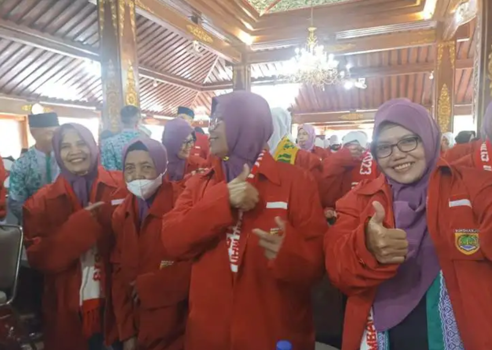

919 Calon Haji Sukoharjo Berpamitan, Bupati Beri Jaket Merah dan Lauk Instan
Bupati Etik Suryani melepas 919 calon haji Kabupaten Sukoharjo yang akan segera terbang
ke Tanah Suci
Mekkah.
Dalam acara pamitan, Bupati memberi calhaj jaket merah dan lauk instan.

Solopos.com, SUKOHARJO — Sejumlah 919 calon haji (calhaj) di Kabupaten Sukoharjo
berpamitan dengan Bupati
Sukoharjo,
Etik Suryani dan Wakil Bupati Agus Santosa di Pendapa Graha Satya Praja (GSP) Setda Sukoharjo, Selasa
(6/6/2023).
Dalam acara tersebut, Bupati dari PDIP itu memberi bekal calhaj berupa jaket merah dan lauk kering tiga macam.
“Jaket merah ini fungsinya luar biasa di sana [Tanah Suci]. Ini untuk identitas orang
Sukoharjo karena di
sana putih semua.
Jadi bisa saling sengkuyung dan membantu,” terang Bupati Etik dalam sambutannya.
Selain menyerahkan jaket merah, ia juga membagikan paket lauk berisi sambal pecel,
serundeng, dan keripik
kentang atau klengkam.
Lauk tersebut menurutnya akan cukup berguna mengingat bakal banyak calhaj Sukoharjo yang kangen dengan masakan
rumah.
Bupati berharap jemaah haji Sukoharjo dapat menjalankan ibadah haji dan sunahnya dengan
lancar dan selalu
dalam kondisi sehat sehingga
bisa kembali pulang sebagai haji mabrur. Ia juga meminta para calhaj saat pergi ke mana pun harus didampingi
rekan lainnya demi keselamatan.